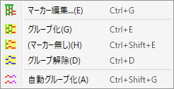

Midiモード
Standard Midi File(.mid)を読み込み、その内容を解析・整理して、BMS用の音切りを行うためのウィンドウです。
-
ここで「音切り」とは以下の手順を指し、その多くの段階がこのモードにおいて実行可能です。
- キー音用の譜面データ(MIDIファイル)を参考に、同一の音を整理し、必要に応じて音高順に並べ替えるなどして、整理済みMIDIファイルを作成する
- 1.で作成したMIDIをDAWなどで読み込んで、スライス用の音声データ(WAVファイル)を書き出す
- 2.で書き出した音声データに対し、1.の整理済みMIDIを用いてスライスマーカーを配置し、その配置に従って複数の音声データに分割する
- 3.で作成した分割済み音声それぞれをBMSデータ(BMSファイル)上に定義し、元々の譜面を再現するようにノーツを配置する
- グループ化や音切りに関わる設定などの情報を保持できるように、このモードではBmsMaker3独自形式BM3Score Data(.bm3scr)にて管理します。
- Version 0.5 時点では、MIDIファイルそのものへの編集機能は一括編集を除き未実装です。
説明
要素をクリックすると説明セクションに飛びます。
要素をクリックすると説明が表示されます。
メインエリア
- 楽譜の内容を確認するエリアです。
- 左からトラックリスト、イベントリスト、譜面表示エリアに分かれています。
- 各エリアの境界をドラッグすることで、幅を変更することができます。
マウスによる操作
-
ホイール: スクロールと拡大率変更に使います。
- 何も押さずにホイールを回すと水平方向にスクロールします。
- Shiftを押している場合は垂直方向にスクロールします。
- Ctrlを押している場合は横スケールを変更します。
- Ctrl+Shiftを押している場合は縦スケールを変更します。
- ホイールボタンを押したままマウスを動かすと、その方向へ高速でスクロールします。
-
左クリック: ノートの範囲選択に使います。
- Ctrlを押している間、選択範囲の左右がノーツ境界にマッチします。
-
右クリック: スクロールとコンテキストメニューに使います。
- 右ドラッグによって縦横にスクロールします。
-
右クリックの後、マウスを動かさずにボタンを離すとコンテキストメニューが開きます。
- マーカー編集: マーカー編集ウィンドウを開きます。
-
グループ化: 選択中の全てのノートを、一つのグループにまとめます。
- 選択範囲にノートグループを含む場合、そのグループも統合して新たなグループにします。
- グループ解除: 選択中の全てのノートグループを解体します。
-
自動グループ化
- 選択中のノートグループと同じ配列となっている全ての単独ノートを、そのノートグループに置き換えます。
- 自動グループ化によって作成された全てのグループは、マーカー編集の状態が共有されます。
- 複数のノートグループを選択している場合は、それぞれについて自動グループ化が適用されます。